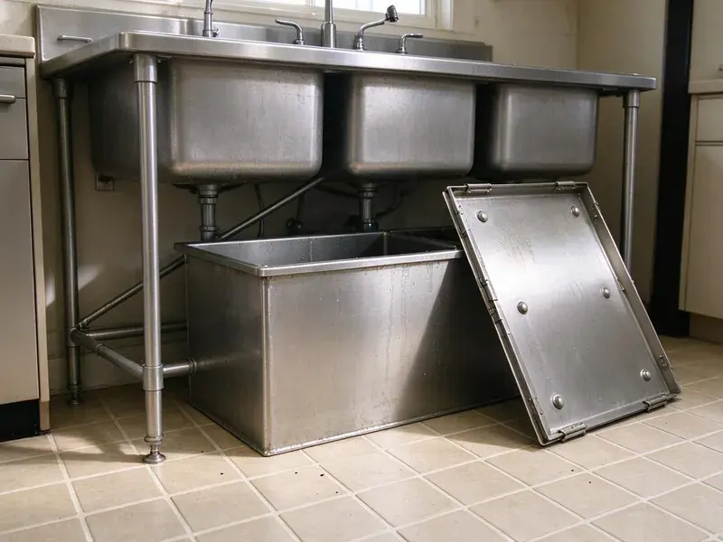

Garbage Disposal Replacement in Canton, OH
HRL Plumbing replaces garbage disposals in Canton, OH with fresh gaskets, a new mount and a leak test, not just a new motor on old parts.
- Fresh Mounting Hardware
- Flat Price Up Front
- Licensed, Insured Plumbers
- Every Joint Leak Tested
Replace Your Worn Out Garbage Disposal Today in Canton, OH
We remove the old unit and install your new one with a clear upfront price.
Fast, Clean Garbage Disposal Replacement in Canton, OH
HRL Plumbing replaces disposals with a new mount, new gaskets and fresh putty on the flange, even when the old hardware looks fine. Rubber hardens with age. Reusing a ten-year-old flange gasket with a new disposal is the most common reason a replacement starts dripping within the first few months in Canton, OH kitchens.
Our expertise includes:
- New mount and flange on every swap
- Cleanup and leak testing after every job
- Replacing all major disposal brands

Additional Kitchen Plumbing Services in Canton, OH
Our kitchen plumbing services in Canton, OH cover sinks, disposals, dishwashers, and grease traps so your kitchen stays clean, safe, and fully functional.


Customers
Why Choose HRL Plumbing for Garbage Disposal Replacement in Canton, OH?
Our plumbers have replaced more disposals than they can count. They are quick at it. Same-brand swaps take under an hour and brand changes a little longer, and neither one needs a return visit.
- Haul-Away, We remove the old unit and take it with us.
- Clear Pricing, You get one flat price covering unit and labor before we start.
- Code Compliance, Every replacement follows local Canton, OH plumbing code for traps and dishwasher drains.
Citywide Coverage
No matter where you live in Canton, a plumber can usually reach you the same day. We dispatch from nearby. Calls go to the closest plumber with the right unit on board, which keeps the wait short when the sink is full and the dishwasher cannot drain.
Experienced Team
Each week our team replaces disposals across every major brand and mount style. They know the mounts by feel. That makes tight cabinets and awkward drain layouts manageable, since they are not fumbling with instructions while lying under the sink with a flashlight.
Safety-First Approach
Our replacements meet Ohio plumbing codes on grounding, venting and drains. We fix old code problems too. If the previous disposal was wired with a lamp cord or drained into a trap with no vent, we correct it during the swap rather than copying the mistake.
Trusted Certified Canton Plumbing Services Professionals
At HRL Plumbing, we take pride in licensed, certified plumbing services throughout Canton, OH. Those papers on the wall mean something. Our plumbers hold recognized industry credentials, and they follow strict safety and quality rules on every repair, installation and maintenance call we run.
Call Us Now PHCC Plumbing Contractor Recognition
PHCC Plumbing Contractor Recognition Better Business Bureau (BBB) Accreditation
Better Business Bureau (BBB) Accreditation Angi Certified Pro
Angi Certified Pro ISO 9001 Quality Management Certification
ISO 9001 Quality Management CertificationDisposal Replacement in Canton, OH: How It Works
Old Unit Removal and New Installation in Canton, OH
Removal includes disconnecting the power, the drain and the dishwasher hose. Next the new unit goes on a fresh mount, everything gets reconnected and tested with water, and the cabinet is cleaned before we go. The old unit goes with us.

Replacing Leaking Disposals in Canton, OH
A slow leak under the sink can rot the cabinet base and leave a musty smell long after the drip is fixed. If your disposal leaks from the housing or a cracked body, replacement is the only real fix, and we inspect the cabinet floor for water damage before installing the new unit. All seals get replaced. Flange, discharge and inlet seals all get swapped.
Leaking Disposal Replacement in Canton
A leak from the bottom of the unit means the seal inside has given out, and that seal is not a replaceable part. We pull the unit, dry the cabinet, check the floor for soft spots and install a new disposal with a new flange and gaskets so every seal on the assembly is fresh. Soft cabinet floors need attention. You will hear about it from us.
InSinkErator Replacement in Canton
Most InSinkErator units share the same Quick Lock mount, so a like-for-like swap can go fast when the old mount is in good shape. If the old ring is corroded or the flange is leaking, we replace both, because a new disposal hung on a worn mount will start dripping within months. Cords often need replacing too. We bring the right cord kit for the new model.
Emergency Disposal Replacement in Canton
A unit dripping onto the cabinet floor should be replaced before the particleboard swells. Turn it off at the switch, stop running the dishwasher and put a pan under the leak, then call us, and we will usually be there the same day with a replacement unit on the truck. Stop running it. Each run forces water through the bad seal.
Commercial Unit Replacement in Canton
Restaurant disposals take a beating every shift, and when one fails the dish line backs up. Failed units get replaced with heavy-duty models sized for your volume, and we check the controls, the solenoid and local sewer rules. Some districts restrict them.
Replacement Options by Price in Canton
Basic disposals do fine with light use, mid-range units suit most families, and premium models add quiet operation and longer warranties. We explain what each level gets you, including horsepower, grind stages, noise and warranty length, then quote the one you pick with installation included. We do not push the top model.

InSinkErator Model Upgrades in Canton
Stepping up from a Badger to an Evolution is the upgrade we install most, since the Evolution line adds grind stages and sound insulation. Because both lines use the same Quick Lock mount, the swap often keeps the existing flange and ring if they are in good condition, which saves time. The Evolution line runs taller. We measure first.
Local Disposal Replacement in Canton, OH
Looking for disposal replacement near you in Canton, OH? HRL Plumbing has plumbers in the area most days, so a same-day swap is often possible. Note the old model if you can. The model number on the bottom of the old disposal tells us which mount you have, so we can bring a replacement that fits without changing the flange.
A backed-up sink needs a fast answer. Our plumbers work across Canton every day with replacement units on the truck, so most swaps finish in about an hour once we arrive and the old unit leaves with us. One visit does it.
HRL Plumbing at a Glance
- Licensed and insured plumbers serving Canton, OH
- 24/7 emergency service with same-day scheduling
- Clear written estimates, no hidden fees
- 4.9-star rated by 673+ Ohio customers
Canton Map
Canton Information
- Population
- 69,197
- Area codes
- 330/234/216
- Service area
- Canton and communities within 40 miles
- Nearby
- Akron, Cuyahoga Falls, Youngstown, Parma
Much of Ohio has hard water, which leaves scale in water heaters, clogs aerators and cuts the life of appliances. Fresh mounting hardware and a new disposal in Canton, OH starts the clock over and keeps the drain moving.
Expert Services
Reach out to HRL Plumbing for honest, reliable plumbing from people who know the trade in Canton, OH.
Our Specialized Plumbing Services in Canton, OH
At HRL Plumbing, you get every kind of plumbing service from one company across Canton, OH. From leak detection to full system installs, our team works fast and charges fair prices on homes and commercial properties alike. Explore our core services below:


How a Disposal Replacement Works in Canton, OH
HRL Plumbing follows the same short routine on every disposal replacement in Canton.
Book the Swap
Call HRL Plumbing at (740) 449-7505 to book the replacement. We will help you choose a unit.
Remove the Old Unit
Your plumber shuts off power, disconnects the drain and removes the old disposal without damaging the sink.
Install the New Unit
We set a new flange and mount, hang the new disposal and reconnect the drain, hose and power.
Frequently Asked Questions About Garbage Disposal Replacement in Canton
Most replacements run $200 to $600 with the unit. A basic 1/3 HP unit costs around $100 while a premium 1 HP model can top $300, and labor plus any drain or wiring changes make up the rest. You get the price first.
Usually not for a simple swap. Significant plumbing changes or new electrical work beyond a straight replacement may require one, and we let you know before we start.
The old unit leaves with us as part of the replacement.
Think about how much you cook. For light use 1/3 or 1/2 HP works, and for regular cooking or tougher scraps, 3/4 or 1 HP is better, and we can help you weigh it for your Canton home.
Warranties from the maker usually run two to ten years, and we guarantee our labor.
Frequent clogs, loud grinding that does not break food down, leaks from the housing or a unit that stops turning on. Age matters too. Past ten years, most disposals are near the end, and spending on repairs rarely makes sense compared to a new unit with a fresh warranty.
Same-brand swaps are doable for a handy homeowner. The trouble spots are the wiring, the flange seal and the knockout plug, and missing any one of them can mean a shock risk, a slow leak or a flooded dishwasher. For us, it is about an hour.
Yes. Manufacturer warranties usually run one to ten years, depending on the model. On top of that, HRL Plumbing warranties the labor on the installation, and the terms go on your invoice so the coverage is clear.
What People Are Saying About Our Plumbing Experts?

Marcus H.
Grease from the fryer line kept clogging the kitchen drain at my diner. HRL Plumbing hydro jetted the line after closing, showed me the buildup on camera, and set us up on a quarterly cleaning so it does not catch us on a Friday again.
Drain Cleaning · Cuyahoga Falls, OHJames P.
Our restaurant had a slow leak at the hand sink that was rotting the cabinet base. HRL Plumbing came in at six in the morning before prep, replaced the trap and both supply lines, and was packed up before my first cook clocked in.
Commercial Plumbing · Youngstown, OH
Sofia M.
Two new toilets went in during one visit. The tech set them on new wax rings and swapped the old supply lines. He also noticed our bathroom faucet dripping and replaced the cartridge while he was there. No mess left behind.
Toilet Installation · Canton, OH
Emily R.
The shutoff valve under our kitchen sink snapped off in my hand on a Sunday morning. HRL Plumbing had someone out by early afternoon. He replaced both angle stops with quarter turn valves and showed me where our main shutoff was, which I honestly did not know.
Plumbing Repair · Lakewood, OH
Angela D.
Our sump pump quit during a storm and the water was an inch from the basement carpet. HRL Plumbing put in a new pump with a battery backup that same evening. We have had two heavy rains since. It kicked on both times.
Sump Pump · Lakewood, OH
Daniel K.
A pipe burst in the garage ceiling at 11 at night. Someone answered on the second ring, and the plumber was in my driveway about fifty minutes later. He shut off the main, cut out the split section, and had water back on before 2 am.
Emergency Plumbing · Lakewood, OH